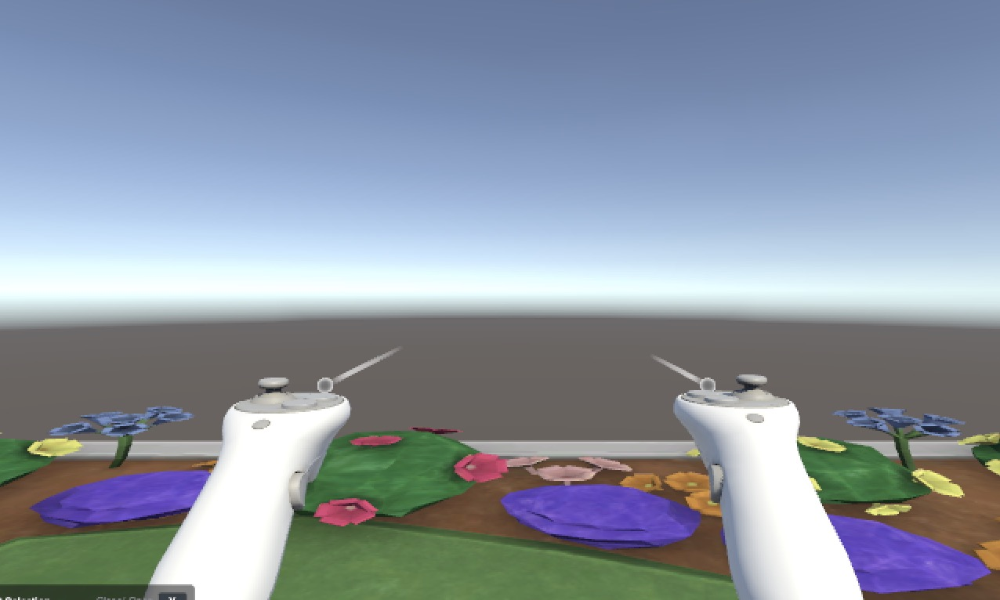

Unity No-Code Toolkit

Documentation Guide
XR Toolkit: How-To Guide This toolkit lets you make things happen in a VR scene without writing code. Every block works the same way in the sense of being easily interactable. Adding a block 1. Select the object in the Hierarchy (left panel). Right click (Control click for mac) scroll to 3D object and select Cube. Once that object is made, right click (control click) again and click on rename, name it Grabbable. 2. Tags are labels that let blocks tell objects apart. The headset is tagged as MainCamera and pick- up objects use Grabbable. In the top left of the Inspector, it starts off being untagged, change the Tag to Grabbable, if not create a new Tag by going to Add Tag, then click the check mark, name your new tag and save. After, go back to the main screen and it will be in your list under the tag dropdown. *As well: Remove the main camera from the Hierarchy (Right/control click then delete). 1. Grab Interactable (built in) What it does: Lets the player pick up, carry, and drop an object. When to use it: The player picks flowers and drops them to plant them in the garden. 1. Select the object. If it's an imported model, click Add Component then Box Collider. 2. Add Component then XR Grab Interactable. Unity adds a Rigidbody (weight) automatically. 3. Set Tag to Grabbable. 4. Optional: in Interactable Events then Select Entered, add AudioSource then Play () for a pickup sound. Setting What it does Default Use Gravity (Rigidbody) Object falls when dropped On Is Kinematic (Rigidbody) Object freezes in midair when let go Off Throw On Detach Object keeps moving if released mid-swing On Select Entered / Exited Actions on grab / on release Empty 2. OnTriggerAction What it does: Does something when the player (or a tagged object) enters or leaves an area. Block and flowers drop when the player enter the scene. 1. Create a new GameObject then 3D Object then Cube and stretch it over the area. 2. In its Box Collider, the check mark Is Trigger. Un-check Mesh Renderer to hide it. 3. Add Component then OnTriggerAction and set Trigger Tag Name. 4. Fill in On Enter and, if needed, On Exit. Setting What it does Default Trigger Tag Name Tag that sets it off (exact spelling) Main Camera/Untagge d On Enter Actions when it comes in Your action On Exit Actions when it leaves Empty 3. TimedAction What it does: Waits a set time, then does something, once or over and over. When to use it: Adds more flowers every few seconds. 1. Add it to the object, or to an empty one (GameObject then Create Empty). 2. Set Duration. Tick Start On Awake to start with the scene, or start it from another block with StartTimer (). 3. To repeat, tick Repeat and set Repeat Count. 4. Fill in On Timer Complete. Setting What it does Default Duration Seconds to wait 5 Start On Awake Starts counting when the scene begins On Repeat Starts again after firing Off Repeat Count Total times it fires; 0 = forever 0 On Timer Complete Actions each time it finishes Your action 4. CollideAction What it does: Does something when a tagged object physically hits this object. Use OnTriggerAction for areas, CollideAction for solid things that get hit. 1. Select the object that gets hit. Its Collider must have Is Trigger unticked. 2. Add Component then CollideAction and set Collider Tag Name, usually Grabbable. 3. Fill in On Collision. Setting What it does Default Collider Tag Name Tag of the thing that hits it Grabbable On Collision Actions on each hit Your action 5. SequenceAction What it does: Runs a list of steps in order, with a pause before each. 1. GameObject then Create Empty, then Add Component then SequenceAction. 2. Set Steps and Step Delays to the same count, and type each delay. 3. Fill in each step. 4. Start it from another block, e.g. a zone's On Enter then SequenceAction then StartSequence (). It Delays counts. Setting What it does Default Steps Actions to run, in order As needed Step Delays Seconds before each step, counted from the last; missing = 0 0, then 1–3 Putting it together: The garden scene Walking through the garden gate starts a short scripted welcome where the player begins in a garden. Object Block When Then TriggerZone OnTriggerAction Player walks in Starts Sequence Sequence SequenceAction Started by the zone Welcome sound now; flower appears 2 s later Timer TimedAction Scene starts Bird sound every 10 s, forever Flower, Cube Grab Interactable Player grabs one Plays a pickup sound Plane (ground) CollideAction A Grabbable object lands Plays a thud Blocks chain by putting one block's start action (StartSequence, StartTimer) into another block's event list. That's how one trigger zone kicks off the whole moment.
Description
For this assignment, I created a mixed reality (XR) experience using Unity, called Unity No-Code Toolkit! The goal of this was to create an interactive experience between the player and objects and how they respond to one another in the game system having more user interactivity! We were taught more ways we can use Unity to create interactable objects such as objects that can be picked up and dropped.
Three Key Takeaways
What was Easiest?
I felt that making the material and writing the code in C# was the easiest. Making the material wasn't terribly difficult as well as writing the C# code.
What was Hardest?
I felt that modifying and getting the right behvior of the objects was the hardest part of the assignment. This is because getting the objects to behave correctly in a mixed reality environment is difficult to get 100% correct. I also ran into errors where certain things should have been checked that weren't and it was hard to find the root of the problem.
What Did I Learn?
I learned how to use the no-code toolkit in Unity to create more interactive objects. I also learned how to use the toolkit to create objects that can be picked up and dropped.
Connecting to My XR Documentary
I connected this assignment to my XR documentary by using the pickup and drop functionalities to create a more interactive experience for the user. Now that the toolkit is available, both CS and ENG students can use it to create more interactive experiences for the SoXR documentary. This will allow for more user interactivity and engagement with the content of the documentary because more group members will be able to contribute with enough knowledge on what they are creating. The limits of not having a programmer available is if ENG students have certain questions, we won't be able to answer them appropriately, thus prohibiting the project from getting completed to the fullest potential. With the toolkit, ENG students can create more interactive experiences without needing to know how to code, thus allowing for more group members to contribute to the project and make it more engaging for the user.
Challenges Faced
The hardest part of the assignment was writing the documentation guide. I'm not the best writer so finding the write words ti explain what was going on was hard.